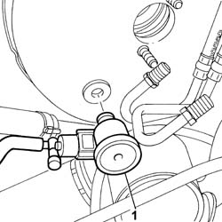
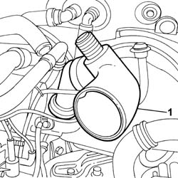
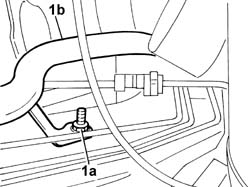
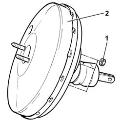

3330D10 BRAKE SERVO - R+R - INCLUDES SEPARATION FROM MASTER CYLINDER (PUMP)
- Path
- Procedures > 33 BRAKES > 3330 HYDRAULIC BRAKE SYSTEM > 3330D BRAKE VACUUM SYSTEM > 3330D10 BRAKE SERVO - R+R - INCLUDES SEPARATION FROM MASTER CYLINDER (PUMP)
- Kind
- repair procedure (removal / refitting; the operation number is the code)
- Applies to
- all engines; all production periods
- Interactive page
- https://sloeber94.github.io/elrnDB-fUlss/en/#/179007309
Applies to: all engines; all production periods
 Removing
Removing
 Refitting
Refitting- Disconnect the negative battery terminal.
Applies to: all engines; all production periods
- Disconnect the single-acting valve from the brake servo.

Applies to: all engines; all production periods
- Undo the nut fixing the turbo air intake hose from the actual turbo.
- Remove the rigid turbo air inlet hose from the air filter via the top of the engine compartment.

Applies to: all engines; all production periods
- Undo the nut fixing (1a) the additional heater (1b) pipe.

Applies to: all engines; all production periods
- Lower the vehicle.
- Release the additional heater pipes from the bodyshell.
Applies to: all engines; all production periods
- Working from inside the vehicle, undo the brake servo fixing nuts.
- Remove the brake servo.

Applies to: all engines; all production periods
Refitting
Removing- Fit the brake servo.
- Tighten the nuts fixing the brake servo to torque.
Applies to: all engines; all production periods
- Press fit the single-acting valve.
Applies to: all engines; all production periods
- Remove the vehicle from the lift.
- Connect the negative battery terminal.
- Test the operation of the braking system.
Applies to: engines: 2.0 16V JTD, 2.2 16V JTD; all production periods
- Secure the additional heater pipes to the bodyshell.
- Reposition the rigid pipe.
- Tighten the nuts for the additional heater rigid supply pipe.
- Tighten the nut fixing the additional heater pipes.
- Fit the rigid section of the turbocharger air inlet pipe.
- Tighten the nut fixing the air intake hose.
- Lower the vehicle.
Applies to: engines: 2.0 16V JTD, 2.2 16V JTD; all production periods